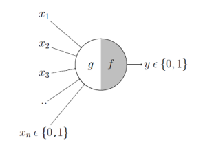
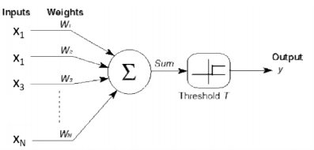
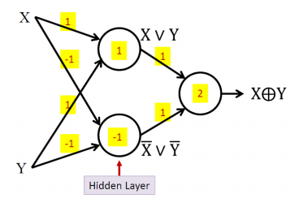
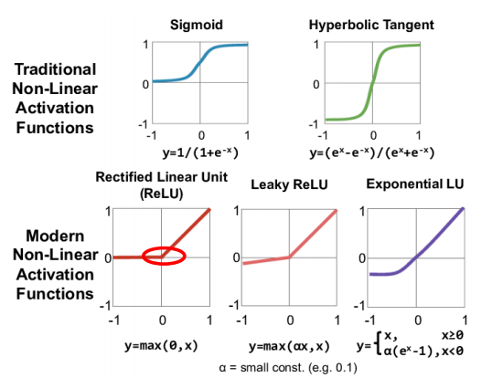

Grading
- HW 15%
- Coding 40%
- Project 25%
- Final 20%
- Note 8%
Overview
McCulloch-Pitts Neuron

- $g(x) = \sum_i x_i$
- $y = f(g(x)) = \mathbb{I} [g(x) > \theta]$
Hebbian Learning
- $w_i$ is the weight between $x_i$ and $y$
- $w_i = w_i + \eta x_i y$
The Perceptron

- If $\sum_i w_ix_i - T > 0$ then $y = 1$ else $y = 0$
- $w = w + \eta(d(x) - y(x))x$
Multi-layer Perceptron
- can compose arbitrarily complicated Boolean functions

Training a 3-node neural network is NPC.
The first AI Winter
- The perceptron cannot represent XOR.
- NP-complete
- Funding cuts
Differentiable Functions
- $z = \sum_i w_ix_i$
- $\sigma (z) = \frac 1 {1 + e ^ {-z}}$
- now have gradient, update weights by back-propagation
Supervised Learning(1)
analytical solution
- Consider $f(X) = f(x_1, x_2, \cdots, x_n)$
- solve $\nabla f(X) = 0$
- calculate $\nabla ^ 2 f(X)$ and verify 是否正定
Iterative solution
-
Start with a guess $X ^ 0$
-
iteratively refine $X$ until $\nabla_X f(X) = 0$ is reached
-
follow the gradient direction
-
Multi-class
-
softmax function
-
$f_c(x) = \frac {\exp(z _ c)} {\sum\exp(z_j)}$
-
$z_i$ is often called a logit (refer to an unscaled value)
-
error function: NLL loss (negative log-likelihood loss)
$err(f(x^i; w), y ^i) = -\log f_{y ^ i }(x ^ i; w)$
-
-
Issues with sigmoid function
- always non-negative
- Alternative: $\tanh$
- Gradient vanishing
- Alternative: $\mathrm{ReLU}$
- always non-negative
-

-
Regularization
- L2 norm on all the weights
- $L(w) = Loss(w) + \alpha |w| ^ 2$
- 不让 $w$ 变得太大防止 overfit
- This is also called weight decay
- $\nabla_w L = \nabla Loss(w) + \alpha w$
Scanning MLP
-
scan 整个图像 or 音频 之类的
， -
相当于识别 local 的 pattern 不管在什么位置
-
Effective in any situation where the data are expected to be composed of similar structures at different locations
- Eg. speech recognition, image recognition
-
loss 就是 每个区域的 loss 的和
-
CNN
- Terminology:
- Filters: scans for a pattern on the map from the previous layer
- Receptive Fields: corresponding patch in the input image
- Strides: the scanning ‘hops’ for each filter
- Padding
- zero padding 是 在外面 pad 0
，
- Fully convolutional network:
- Downsample instead of pooling
- Convolution with stride > 1 to reduce the size
- Equivalent to learn a pooling operator
- Terminology: